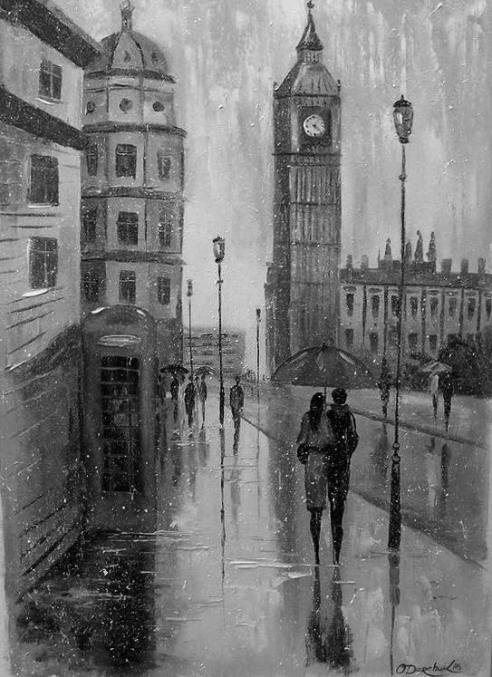

Nathaniel Hawthorne
When eve has fairly set in, therefore, I sally forth, tightly
buttoning my shaggy overcoat, and hoisting my umbrella, the silken
dome of which immediately resounds with the heavy drumming of the
invisible rain-drops. Pausing on the lowest doorstep, I contrast the
warmth and cheerfulness of my deserted fireside with the drear
obscurity and chill discomfort into which I am about to plunge. Now
come fearful auguries, innumerable as the drops of rain. Did not my
manhood cry shame upon me, I should turn back within doors, resume my
elbow-chair, my slippers, and my book, pass such an evening of
sluggish enjoyment as the day has been, and go to bed inglorious. The
same shivering reluctance, no doubt, has quelled, for a moment, the
adventurous spirit of many a traveller, when his feet, which were
destined to measure the earth around, were leaving their last tracks
in the home-paths.
In my own case, poor human nature may be allowed a few misgivings. I
look upward, and discern no sky, not even an unfathomable void, but
only a black, impenetrable nothingness, as though heaven and all its
lights were blotted from the system of the universe. It is as if
nature were dead, and the world had put on black, and the clouds were
weeping for her. With their tears upon my cheek, I turn my eyes
earthward, but find little consolation here below. A lamp is burning
dimly at the distant corner, and throws just enough of light along the
street, to show, and exaggerate by so faintly showing, the perils and
difficulties which beset my path. Yonder dingily white remnant of a
huge snow-bank,--which will yet cumber the sidewalk till the latter
days of March,--over or through that wintry waste must I stride
onward. Beyond, lies a certain Slough of Despond, a concoction of mud
and liquid filth, ankle-deep, leg-deep, neck-deep,--in a word, of
unknown bottom, on which the lamplight does not even glimmer, but which
I have occasionally watched, in the gradual growth of its horrors,
from morn till nightfall. Should I flounder into its depths, farewell
to upper earth! And hark! how roughly resounds the roaring of a
stream, the turbulent career of which is partially reddened by the
gleam of the lamp, but elsewhere brawls noisily through the densest
gloom. O, should I be swept away in fording that impetuous and
unclean torrent, the coroner will have a job with an unfortunate
gentleman, who would fain end his troubles anywhere but in a mud-
puddle!
Pshaw! I will linger not another instant at arm's length from these
dim terrors, which grow more obscurely formidable, the longer I delay
to grapple with them. Now for the onset! And to! with little damage,
save a dash of rain in the fact and breast, a splash of mud high up
the pantaloons, and the left boot full of ice-cold water, behold me at
the corner of the street. The lamp throws down a circle of red light
around me; and twinkling onward from corner to corner, I discern other
beacons marshalling my way to a brighter scene. But this is alone
some and dreary spot. The tall edifices bid gloomy defiance to the
storm, with their blinds all closed, even as a man winks when he faces
a spattering gust. How loudly tinkles the collected rain down the tin
spouts! The puffs of wind are boisterous, and seem to assail me from
various quarters at once. I have often observed that this corner is a
haunt and loitering-place for those winds which have no work to do
upon the deep, dashing ships against our iron-bound shores; nor in the
forest, tearing up the sylvan giants with half a rood of soil at their
vast roots. Here they amuse themselves with lesser freaks of
mischief. See, at this moment, how they assail yonder poor woman, who
is passing just within the verge of the lamplight! One blast
struggles for her umbrella, and turns it wrong side outward; another
whisks the cape of her cloak across her eyes; while a third takes most
unwarrantable liberties with the lower part of her attire. Happily,
the good dame is no gossamer, but a figure of rotundity and fleshly
substance; else would these aerial tormentors whirl her aloft, like a
witch upon a broomstick, and set her down, doubtless, in the filthiest
kennel hereabout.
From hence I tread upon firm pavements into the centre of the town.
Here there is almost as brilliant an illumination as when some great
victory has been won, either on the battle-field or at the polls. Two
rows of shops, with windows down nearly to the ground, cast a glow
from side to side, while the black night hangs overhead like a canopy,
and thus keeps the splendor from diffusing itself away. The wet
sidewalks gleam with a broad sheet of red light. The rain-drops
glitter, as if the sky were pouring down rubies. The spouts gush with
fire. Methinks the scene is an emblem of the deceptive glare, which
mortals throw around their footsteps in the moral world, thus
bedazzling themselves, till they forget the impenetrable obscurity
that hems them in, and that can be dispelled only by radiance from
above. And after all, it is a cheerless scene, and cheerless are the
wanderers in it. Here comes one who has so long been familiar with
tempestuous weather that he takes the bluster of the storm for a
friendly greeting, as if it should say, "How fare ye, brother?"
He is a retired sea-captain, wrapped in some nameless garment of the
pea-jacket order, and is now laying his course towards the Marine
Insurance Office, there to spin yarns of gale and shipwreck, with a
crew of old seadogs like himself. The blast will put in its word
among their hoarse voices, and be understood by all of them. Next I
meet an unhappy slipshod gentleman, with a cloak flung hastily over
his shoulders, running a race with boisterous winds, and striving to
glide between the drops of rain. Some domestic emergency or other has
blown this miserable man from his warm fireside in quest of a doctor!
See that little vagabond,--how carelessly he has taken his stand right
underneath a spout, while staring at some object of curiosity in a
shop-window! Surely the rain is his native element; he must have
fallen with it from the clouds, as frogs are supposed to do.
Here is a picture, and a pretty one. A young man and a girl, both
enveloped in cloaks, and huddled beneath the scanty protection of a
cotton umbrella. She wears rubber overshoes; but he is in his
dancing-pumps; and they are on their way, no doubt, to sonic cotillon-
party, or subscription-ball at a dollar a head, refreshments included.
Thus they struggle against the gloomy tempest, lured onward by a
vision of festal splendor. But, ah! a most lamentable disaster.
Bewildered by the red, blue, and yellow meteors, in an apothecary's
window, they have stepped upon a slippery remnant of ice, and are
precipitated into a confluence of swollen floods, at the corner of two
streets. Luckless lovers! Were it my nature to be other than a
looker-on in life, I would attempt your rescue. Since that may not
be, I vow, should you be drowned, to weave such a pathetic story of
your fate, as shall call forth tears enough to drown you both anew.
Do ye touch bottom, my young friends? Yes; they emerge like a water-
nymph and a river deity, and paddle hand in hand out of the depths of
the dark pool. They hurry homeward, dripping, disconsolate, abashed,
but with love too warm to be chilled by the cold water. They have
stood a test which proves too strong for many. Faithful, though over
head and ears in trouble!

Onward